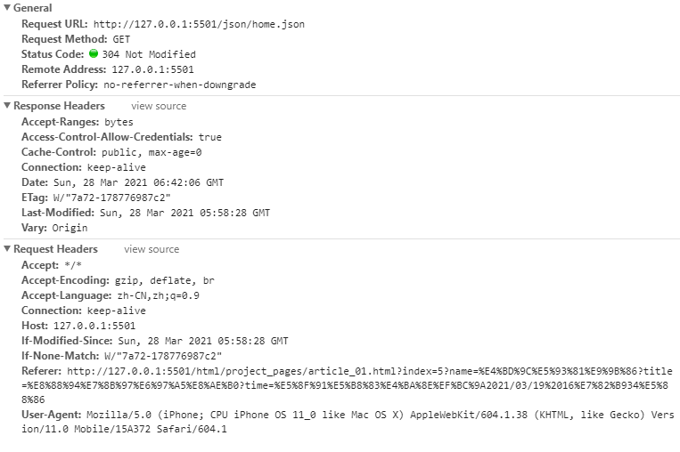

http简介主要特点：HTTP之URLURI和URL的区别HTTP之请求消息RequestHTTP之响应消息ResponseHTTP之状态码1xx：指示信息--表示请求已接收，继续处理2xx：成功--表示请求已被成功接收、理解、接受3xx：重定向--要完成请求必须进行更进一步的操作4xx：客户端错误--请求有语法错误或请求无法实现5xx：服务器端错误--服务器未能实现合法的请求一些http的问题1、http协议的请求方式是什么？2、http和https有什么区别？3、HTTP协议有什么特点？4、cookies机制和session机制的区别是什么？5、GET和POST的区别？6、什么是Http协议无状态协议？怎么解决Http协议无状态协议？7、说一下Http协议中302状态？8、Http协议有什么组成？9、Http协议中有那些请求方式？10、TCP和UDP的区别？11、什么是报文？
http简介
- HTTP协议是Hyper Text Transfer Protocol（超文本传输协议）的缩写,是用于从万维网（WWW:World Wide Web ）服务器传输超文本到本地浏览器的传送协议。
- HTTP协议工作于客户端-服务端架构为上。浏览器作为HTTP客户端通过URL向HTTP服务端即WEB服务器发送所有请求。Web服务器根据接收到的请求后，向客户端发送响应信息。
主要特点：
- 简单快速：客户向服务器请求服务时，只需传送请求方法和路径。请求方法常用的有GET、HEAD、POST。每种方法规定了客户与服务器联系的类型不同。由于HTTP协议简单，使得HTTP服务器的程序规模小，因而通信速度很快。
- 灵活：HTTP允许传输任意类型的数据对象。正在传输的类型由Content-Type加以标记。
- 无连接：无连接的含义是限制每次连接只处理一个请求。服务器处理完客户的请求，并收到客户的应答后，即断开连接。采用这种方式可以节省传输时间。
- 无状态：HTTP协议是无状态协议。无状态是指协议对于事务处理没有记忆能力。缺少状态意味着如果后续处理需要前面的信息，则它必须重传，这样可能导致每次连接传送的数据量增大。另一方面，在服务器不需要先前信息时它的应答就较快。
HTTP之URL
- HTTP使用统一资源标识符（Uniform Resource Identifiers, URI）来传输数据和建立连接。URL是一种特殊类型的URI，包含了用于查找某个资源的足够的信息
- URL,全称是UniformResourceLocator, 中文叫统一资源定位符,是互联网上用来标识某一处资源的地址。以下面这个URL为例，介绍下普通URL的各部分组成：
http://zmlong.usa3v.net:80/html/home_pages/article_03.html?index=0
从上面的url可以看出，一个完整的url包括以下几个部分
- 协议部分：该URL的协议部分为“http：”，这代表网页使用的是HTTP协议。在Internet中可以使用多种协议，如HTTP，FTP等等本例中使用的是HTTP协议。在"HTTP"后面的“//”为分隔符
- 域名部分：该URL的域名部分为“zmlong.usa3v.net”。一个URL中，也可以使用IP地址作为域名使用
- 端口部分：跟在域名后面的是端口，域名和端口之间使用“:”作为分隔符。端口不是一个URL必须的部分，如果省略端口部分，将采用默认端口 80
- 虚拟目录部分：从域名后的第一个“/”开始到最后一个“/”为止，是虚拟目录部分。虚拟目录也不是一个URL必须的部分。本例中的虚拟目录是“/html/”
- 文件名部分：从域名后的最后一个“/”开始到“？”为止，是文件名部分，如果没有“?”,则是从域名后的最后一个“/”开始到“#”为止，是文件部分，如果没有“？”和“#”，那么从域名后的最后一个“/”开始到结束，都是文件名部分。本例中的文件名是“index.html”。文件名部分也不是一个URL必须的部分，如果省略该部分，则使用默认的文件名 index.html
- 锚部分：从“#”开始到最后，都是锚部分。本链接没有锚 ， 锚部分也不是一个URL必须的部分
- 参数部分：从“？”开始到“#”为止之间的部分为参数部分，又称搜索部分、查询部分。假设参数部分为“boardID=5&ID=24618&page=1”。参数可以允许有多个参数，参数与参数之间用“&”作为分隔符。
URI和URL的区别
URI，是uniform resource identifier，统一资源标识符，用来唯一的标识一个资源。
URL是uniform resource locator，统一资源定位器，它是一种具体的URI，即URL可以用来标识一个资源，而且还指明了如何locate这个资源。
- URL一般由三部组成： ①协议(或称为服务方式) ②存有该资源的主机IP地址(有时也包括端口号) ③主机资源的具体地址。如目录和文件名等
每个 URL 都是 URI，但不一定每个 URI 都是 URL。
HTTP之请求消息Request
以ajax为例
xxxxxxxxxx121//1.创建对象2var xhr = new XMLHttpRequest();3//2.设置请求行(get请求数据写在url后面)4xhr.open('get','getData.php?name=rose&skill=swim');5//3.设置请求头(get请求可以省略,post不发送数据也可以省略)6// xhr.setRequestHeader(Content-type","application/x-www-form-urlencoded)7//3.5注册回调函数8xhr.onload = function(){910}11//4.请求主体发送(get请求为空，或者写null，post请求数据写在这里，如果没有数据，直接为空或者写null)12xhr.send(null);包含 请求行，请求头，请求发送，还有回调事件监听
HTTP之响应消息Response

- 返回的信息包括，响应报文，响应头信息、和请求头信息
HTTP之状态码
状态代码有三位数字组成，第一个数字定义了响应的类别，共分五种类别:
1xx：指示信息--表示请求已接收，继续处理
2xx：成功--表示请求已被成功接收、理解、接受
3xx：重定向--要完成请求必须进行更进一步的操作
4xx：客户端错误--请求有语法错误或请求无法实现
5xx：服务器端错误--服务器未能实现合法的请求
常见状态码：
xxxxxxxxxx71200 OK //客户端请求成功2400 Bad Request //客户端请求有语法错误，不能被服务器所理解3401 Unauthorized //请求未经授权，这个状态代码必须和WWW-Authenticate报头域一起使用4403 Forbidden //服务器收到请求，但是拒绝提供服务5404 Not Found //请求资源不存在，eg：输入了错误的URL6500 Internal Server Error //服务器发生不可预期的错误7503 Server Unavailable //服务器当前不能处理客户端的请求，一段时间后可能恢复正常
更多状态码http://www.runoob.com/http/http-status-codes.html
一些http的问题
1、http协议的请求方式是什么？
答：HTTP是一个基于TCP/IP通信协议来传递数据，包括html文件、图像、结果等，即是一个客户端和服务器端请求和应答的标准。基本上用到的就是GET和POST，充其量再遇到个option请求。
2、http和https有什么区别？
- https有ca证书，http一般没有
- http是超文本传输协议，信息是明文传输。https则是具有安全性的ssl加密传输协议；
- http默认80端口，https默认443端口。
3、HTTP协议有什么特点？
- http无连接：限制每次连接只处理一个请求，服务端完成客户端的请求后，即断开连接。（传输速度快，减少不必要的连接，但也意味着每一次访问都要建立一次连接，效率降低）；
- http无状态：对于事务处理没有记忆能力。每一次请求都是独立的，不记录客户端任何行为；
- 客户端/服务端模型：客户端支持web浏览器或其他任何客户端；
- 简单快速灵活：可以传输任何类型的数据。
4、cookies机制和session机制的区别是什么？
- cookies数据保存在客户端，session数据保存在服务端；
- cookies可以减轻服务器压力，但是不安全，容易进行cookies欺骗；
- session安全一点，但是占用服务器资源。
5、GET和POST的区别？
答：简单来说：GET产生一个TCP数据包，POST产生两个TCP数据包。严格的说：对于GET方式的请求，游览器会把http header和data一并发送出去，服务器响应200（返回数据）；而对于POST请求。游览器先发送header，服务器响应100continue，游览器再发送data，服务器响应200 ok（返回数据）
6、什么是Http协议无状态协议？怎么解决Http协议无状态协议？
答：无状态协议对于事务处理没有记忆能力。缺少状态意味着如果后续处理需要前面的信息。状态协议解决办法：通过1、Cookie 2、通过Session会话保存。
7、说一下Http协议中302状态？
答：http协议中，返回状态码302表示重定向。这种情况下，服务器返回的头部信息中会包含一个Location字段，内容是重定向到的url。
8、Http协议有什么组成？
答：首先分为请求报文和响应报文。请求报文包含三部分：请求行：包含请求方法、URI、HTTP版本信息；请求首部字段；请求内容实体。
响应报文包含三部分：状态行：包含HTTP版本、状态码、状态码的原因短语；响应首部字段；响应内容实体。
9、Http协议中有那些请求方式？
- GET：用于请求访问已经被URI（统一资源标识符）识别的资源，可以通过URL传参给服务器。
- POST：用于传输信息给服务器，主要功能与GET方法类似，但一般推荐使用POST方式。
- PUT： 传输文件，报文主体中包含文件内容，保存到对应URI位置。
- HEAD： 获得报文首部，与GET方法类似，只是不返回报文主体，一般用于验证URI是否有效。
- DELETE：删除文件，与PUT方法相反，删除对应URI位置的文件。
- OPTIONS：查询相应URI支持的HTTP方法。
10、TCP和UDP的区别？
- TCP（Transmission Control Protocol，传输控制协议）是基于连接的协议，也就是说，在正式收发数据前，必须和对方建立可靠的连接。一个TCP连接必须要经过三次“对话”才能建立起来。
- UDP（User Data Protocol，用户数据报协议）是与TCP相对应的协议。它是面向非连接的协议，它不与对方建立连接，而是直接就把数据包发送过去，UDP适用于一次只传送少量数据、对可靠性要求不高的应用环境。
11、什么是报文？
报文分为 请求报文 相应报文
- 请求报文 包括（1）请求行（2）请求头（3）请求主题 主要是 发送的方法 浏览器的信息 以及发送的数据
- 相应报文 包括 （1）状态行（2）响应头（3）相应主题 主要是 服务器的信息 浏览器的内容 以及请求是否成功